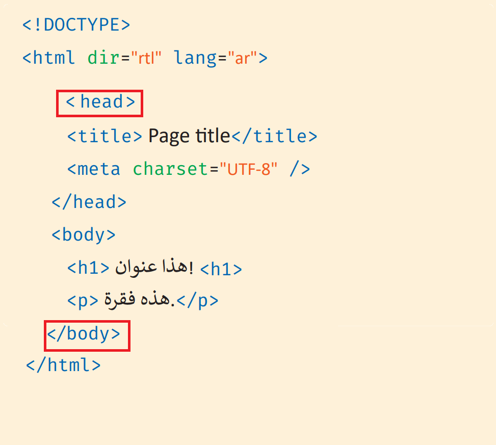

نلاحظ في هذه الصورة أن هناك أوسمة غير كاملة
تم إضافة الأوسمة بنجاح
رياضة يتبارى فيها لاعبان أو أربعة بضرب كرة خفيفة تناوباً باستخدام مضرب لعب صغير. تُقام المباراة على طاولة صلبة تقسّمها شبكة لنصفين. رياضة تنس الطاولة إحدى أكثر الرياضات شعبية من حيث عدد اللاعبين، وهي من أحدث الرياضات الكبرى الحالية. تضرب كرة التنس عند الإرسال بوجه أو ظهر اليد إلى منطقة الخصم، وتُحتسب النتيجة النهائية بناءً على عدد النقاط التي حصل عليها اللاعبين في المسابقة، حيث يفوز من يحقق 11 نقطة أولاً وعند وصول كلا اللاعبين نقطة 10/10 يجب على اللاعب الفوز بنقطتين متتاليتين. تتطلب الرياضة تركيزاً عالياً وسرعة رد الفعل ولياقة بدنية عالية لكونها رياضة سريعة.
المصدربادل هي رياضة من رياضات المضرب، تختلف عن رياضة التنس الأرضي المعروفة في الولايات المتحدة وكندا. عادةً ما تُلعب البادل بشكل زوجي في ملعب مُغلق بحوالي 25% أصغر من حجم ملعب التنس. تَكمن الاختلافات الرئيسية في أنَّ الملعب به جدران زجاج ويمكن لعب الكرات عليها كما في لعبة الإسكواش. يجب أن يكون ارتفاع الكرة أثناء اللعب عند مستوى الخصر أو أقل منه.
المصدر